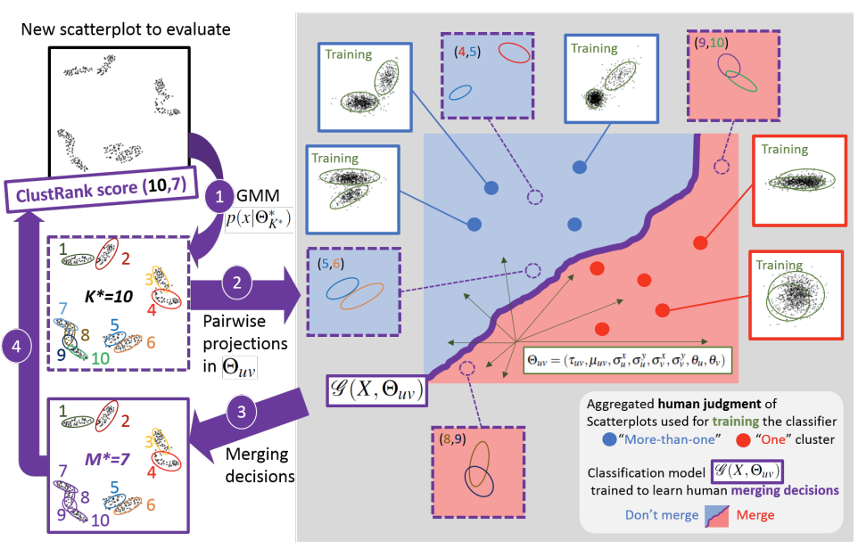

ClustML: A Measure of Cluster Pattern Complexity in Scatterplots Learnt from Human-labeled Groupings

Venue. Information Visualization (2024)
Abstract. Visual quality measures (VQMs) are designed to support analysts by automatically detecting and quantifying patterns in visualizations. We propose a new data-driven technique called ClustRank that allows to rank scatterplots according to visible grouping patterns. Our model first encodes scatterplots in the parametric space of a Gaussian Mixture Model, and then uses a classifier trained on human judgment data to estimate the perceptual complexity of grouping patterns. The numbers of initial mixture components and final combined groups determine the rank of the scatterplot. ClustRank improves on existing VQM techniques by mimicking human judgments on two-Gaussian cluster patterns and gives more accuracy when ranking general cluster patterns in scatterplots. We demonstrate its benefit by analyzing kinship data for genome-wide association studies, a domain in which experts rely on the visual analysis of large sets of scatterplots. We make the three benchmark datasets and the ClustRank VQM available for practical use and further improvements.
Link to this page: